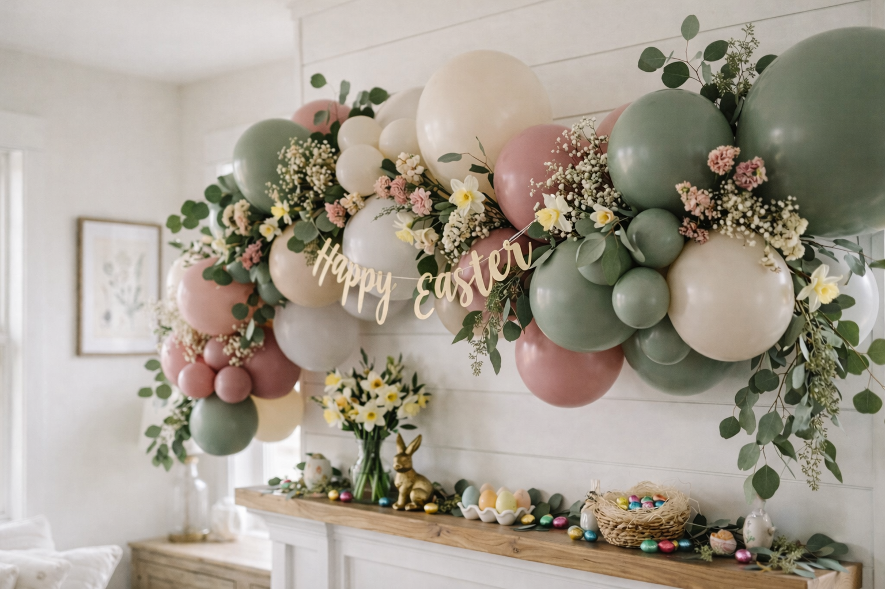
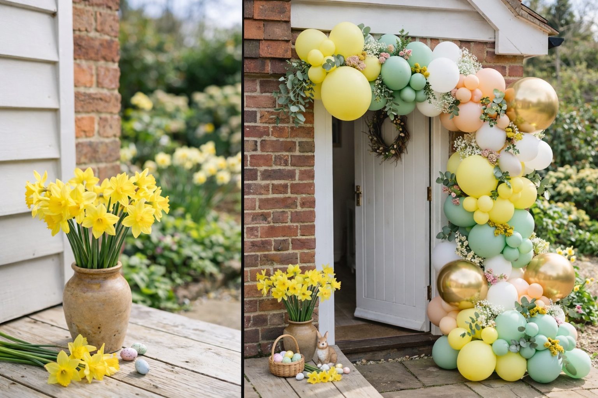
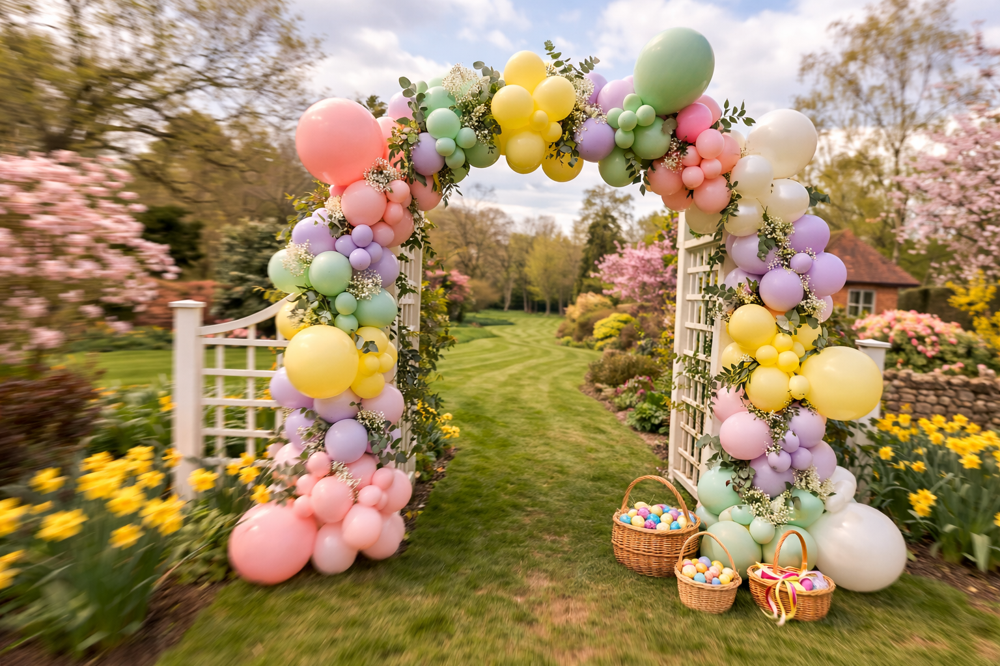

Easter is one of those brilliant celebrations that works at every scale — from a full-blown party with 30 guests to an egg hunt in the garden with the kids and a few bunny-shaped balloons tied to the fence. Either way, a bit of balloon styling makes the whole thing feel special.
With Easter Sunday falling on the 5th of April this year (and a lovely four-day bank holiday weekend to go with it), now’s the time to start thinking about how you want to celebrate. Whether you’re planning an Easter brunch, a garden egg hunt, or a spring-themed birthday party, we’ve pulled together our favourite ideas to help you get inspired.
Easter Colour Palettes We Love
Pastels are the obvious starting point — and for good reason. But there’s a world of difference between “generic pastel mix from the party shop” and a carefully chosen palette that makes your setup look intentional. Here are the combinations we’re loving this year.
1. Sage & Blush
The standout palette for spring 2026. Sage green paired with dusty rose and ivory creates a sophisticated, grown-up Easter that still feels fresh and spring-like. Works beautifully for Easter brunches and garden parties where you want elegance without it looking like a children’s party.
Sage Green · Dusty Rose · Ivory · White
2. Butter Yellow & Mint
Cheerful without being loud. Butter yellow and mint green feel properly Easter — daffodils, spring sunshine, new growth. Add white to keep it clean and maybe a touch of peach for warmth. This palette is gorgeous for egg hunts and children’s parties.
Butter Yellow · Mint Green · White · Peach
3. Lilac & Cream
Soft, dreamy, and very photogenic. Lilac with cream and white is understated and romantic — perfect for an intimate Easter celebration or a spring birthday party. Chrome silver or pearl-finish balloons add a touch of shimmer without overpowering the softness.
Lilac · Cream · White · Pearl Silver
4. Pastel Rainbow
If you can’t choose one colour — use them all. A muted pastel rainbow (not bright primaries) creates a joyful, playful display that children absolutely love. The trick is using muted tones rather than vivid ones — soft pink, duck egg blue, butter yellow, mint, lilac — so it feels cohesive rather than chaotic.
Soft Pink · Butter Yellow · Mint · Duck Egg · Lilac
Colour Tip
Matte balloons photograph better than shiny ones — they don’t bounce light or create glare. Use matte finishes for the bulk of your display and add one or two chrome or pearl balloons as accents for depth and dimension.


Spring palettes in action — sage & blush (left) and butter yellow & mint (right)
Easter Balloon Display Ideas
Different displays suit different celebrations. Here’s what works best for Easter events.
Organic Garlands
The most popular choice for Easter. An organic balloon garland in spring pastels — draped above a dessert table, along a mantelpiece, or framing a doorway — instantly transforms any space. Weave in some faux greenery, a few sprigs of dried flowers, or even some paper bunny ears for an Easter twist.
Best for: Dessert table backdrops · Mantelpiece displays · Photo walls
Balloon Arches
A pastel balloon arch at the entrance to an Easter party or the starting line of an egg hunt creates a proper “wow” moment. Children love walking through a balloon arch — it feels like entering a different world. For outdoor use, make sure the base is weighted properly (sand-filled balloons at the base or cable-tied to stakes).
Best for: Egg hunt starting points · Garden party entrances · Photo opportunities
Bunny Balloon Displays
Foil bunny balloons are an Easter essential. The large floppy-eared bunny foils (about 37 inches tall) work brilliantly as standalone features beside a dessert table or at the entrance. For something more subtle, white round balloons with drawn-on bunny faces and paper ear toppers are sweet, simple, and the kids can help make them.
Best for: Children’s parties · Themed centrepieces · DIY fun
Table Centrepieces
Small clusters of three to five pastel balloons at different heights make lovely table centrepieces for an Easter brunch or lunch. Tie them with ribbon and add a small bunch of daffodils or a scattering of mini eggs at the base. Simple, inexpensive, and they free up table space since they float above the food.
Best for: Easter brunches · Lunch parties · Restaurant celebrations
Styling Tip
The best Easter displays combine balloons with natural elements — daffodils, greenery, branches. It’s spring, so lean into it. Balloons and flowers together look far better than either on their own.
Egg Hunt Styling Ideas
If you’re organising an Easter egg hunt — whether in the garden, at a park, or in a village hall — here’s how to take it from “eggs scattered on the grass” to a properly styled event the kids (and the adults, let’s be honest) will remember.
Create a Starting Line
A balloon arch or garland at the starting point makes the moment the hunt begins feel like a real event. The children line up, the countdown starts, and they burst through. It’s theatrical, it’s exciting, and the photos are brilliant.
Use Balloons as Trail Markers
Tie balloon clusters to stakes, trees, or fence posts along the egg hunt route. Different colours can signal different zones or difficulty levels — yellow balloons for the easy eggs, pink for medium, purple for the tricky ones. It adds structure and makes it visual even from a distance.
Balloon Eggs for Toddlers
For very little ones who might struggle to spot small eggs in the grass, try tying plastic eggs to balloon strings. They’re easier to see, more exciting to find, and the balloon doubles as a prize. You can even put sweets or small toys inside the plastic eggs.
A Photo Moment at the End
Set up a simple photo backdrop at the finish line — a pastel balloon garland with an “Happy Easter” banner or a giant bunny foil balloon. Every child holds up their basket of eggs and gets a photo. Parents absolutely love this, and it gives the hunt a proper ending rather than just… stopping.

A balloon arch marks the starting line — the moment every egg hunt needs
Easter Egg Hunt Styling Checklist
Everything you need for a beautifully styled egg hunt
- Balloon arch or garland for the start
- Balloon clusters as trail markers
- Bunting or ribbon between trees
- Easter baskets or paper bags for each child
- Photo backdrop at the finish
- Prizes for different age groups
- Blankets and cushions for a picnic after
- Hot cross buns and drinks for the adults
- A backup plan if it rains
- Camera fully charged
Easter Party Themes
Not sure which direction to go? Here are four Easter party themes that work brilliantly with balloon styling.
Spring Garden Party
Sage and blush balloons, daffodils in jam jars, a grazing board on a blanket, and fairy lights strung between trees. Relaxed, beautiful, and perfect for the bank holiday weekend if the weather plays ball. Have a gazebo on standby.
Easter Brunch
Lilac and cream balloons framing the table, prosecco, hot cross buns with fancy butter, smoked salmon, and a big fruit platter. Elegant and grown-up. Perfect for hosting friends or family on Easter Sunday morning.
Bunny & Friends
White and pastel rainbow balloons with bunny, lamb, and chick motifs. A children’s party classic. Add bunny ear headbands, an egg decorating station, and a hot chocolate bar. Works indoors or out and the kids will be in heaven.
Woodland Easter
Earthy greens, browns, and cream with foliage, wooden props, and mushroom decorations. A more natural, rustic take on Easter that looks stunning in gardens and woodland settings. Think Peter Rabbit without the licensing fees.
Indoor vs Outdoor: What to Consider
Let’s be realistic — it’s early April in Kent. The sun might be shining, or it might be sideways rain. Planning an Easter celebration means having a plan for both.
Outdoor Balloon Tips
- Wind is the enemy. Balloon garlands need to be anchored properly outdoors. Weighted bases, cable ties to structures, and sheltered positions (against a fence, under a gazebo) are essential.
- Avoid direct afternoon sun for extended periods — balloons can pop in strong heat. Morning setups work best.
- Have a backup location. If your garland is on a freestanding frame, it can be moved indoors if the weather turns. Plan for this in advance.
- Tie balloons low so wind catches them less. Ground-level garlands along fences or table edges are more sheltered than tall arches.
Indoor Alternatives
If the weather’s not cooperating, everything moves inside. A balloon garland along the mantelpiece, above the dining table, or framing the doorway between rooms works just as well. Village halls are brilliant for wet-weather Easter parties — hire one for £50–£100 and you’ve got a blank canvas to style however you like.
Kent Weather Tip
Average April temperature in Kent is 9–15°C with about 14 days of rain. Plan your hero display (balloon garland, photo backdrop) in a sheltered spot that works rain or shine — a doorway, covered patio, or conservatory. The egg hunt can go outside; the styling should be weatherproof.
DIY vs Professional Styling
We’ll be honest with you — for a small family Easter, DIY balloons are brilliant. A £15–£25 balloon kit from Ginger Ray or Hobbycraft gives you 50+ pastel balloons, some bunny shapes, and a balloon tape strip. Inflate them, stick them along the tape, and drape it wherever you want. It’ll look festive and cheerful, and it’s a lovely activity to do with the children too.
Where professional styling makes sense:
- You’re hosting a larger Easter party (15+ guests) and want it to look impressive
- You want a statement display — a full arch, large garland, or photo backdrop
- You’re combining Easter with another celebration (a spring birthday, christening, etc.)
- You want to enjoy the party yourself rather than spending the morning inflating 200 balloons
- The display is outdoors and needs to be structurally sound
The sweet spot for many of our clients is a hybrid approach — we install the main feature (a garland or arch) and they do simple table balloons and bunting themselves. You get the wow factor of professional styling where it matters most, and DIY for the finishing touches.
Easter Table Styling
The Easter table is where food, flowers, and balloons all come together. Here’s how to make it look beautiful without spending a fortune.
- Daffodils everywhere. They’re £1 a bunch from the supermarket and they’re the quintessential British spring flower. Pop them in jam jars, egg cups, or small vases down the centre of the table.
- Scatter mini eggs. It costs about £3 and instantly makes any table feel Easter-ready. Scatter them around the daffodils and candles.
- Floating balloons. Helium-filled pastel balloons with ribbon trailing down to the table add height and movement. Tie a small chocolate egg to each ribbon as a place setting.
- Keep it low. Make sure centrepieces don’t block eye contact across the table. Either go very low (flowers, eggs, candles) or very high (floating balloons above head height).
- Coordinate your napkins. Folded napkins in your chosen colour cost next to nothing but tie the whole look together.
Keep It Simple
A bunch of daffodils, some scattered mini eggs, and a few pastel balloons — that’s an Easter table styled. It doesn’t need to be complicated to look gorgeous.
Book Your Easter Styling
If you’re planning an Easter celebration in Kent this year — whether it’s a garden party, egg hunt, brunch, or spring birthday — we’d love to help make it beautiful. We install balloon garlands, arches, and displays across Sittingbourne, Maidstone, Canterbury, Faversham, Medway, and the rest of Kent.
Easter weekend fills up fast, so if you’re thinking about professional styling, now’s the time to get in touch. Have a look at our gallery to see our work, or read our colour palette guide if you’re still deciding on your spring colours.
Let’s Make Easter Beautiful
Tell us about your Easter celebration and we’ll design the perfect balloon display — from simple table styling to full garden party installations.